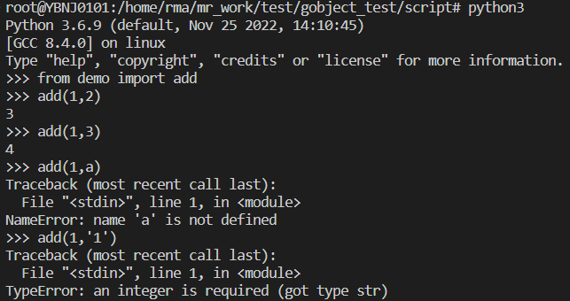
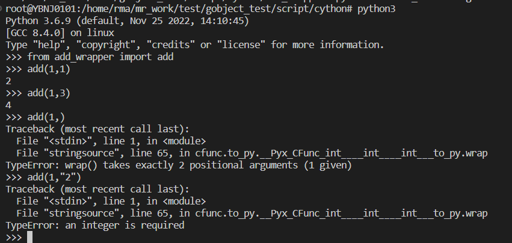
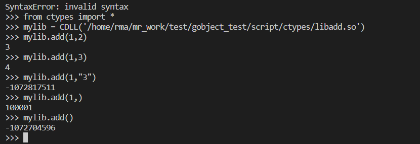
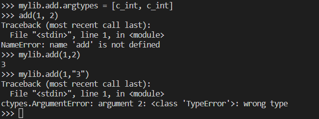
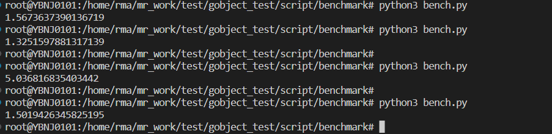

简介
一个python项目快速开发完以后，常常针对瓶颈进行优化，其中一种方式就是对于性能至关重要的部分，使用C重写，这已经是一种最佳实践。如果整个项目完全使用C，开发效率就没有保障。python运行环境(CPython)是用C开发的，因此python与C结合起来很容易，而且方式多种多样。使用C重写了关键部分后，需要在python中调用，本文介绍三种最常用的调用C函数的方式，分别是c extension，Cython和ctypes
c extension
介绍
python标准库包含了很多使用C开发的扩展模块，比如对性能要求很高的json库。开发者同样可以使用C开发扩展，这是最原始也是最底层的扩展python的方式。
示例demomodule.c
python的扩展模块由以下几部分组成：
- Python.h
- C函数
- 接口函数（python代码调用的函数）到C函数的映射表
- 初始化函数
1 | // pulls in the Python API |
setup.py
编译扩展模块通常使用distutils或setuptools，它会自动调用gcc完成编译和链接。
1 | from distutils.core import setup, Extension |
执行
1 | python setup.py build_ext --inplace |
会在当前目录生成一个demo.so。一个python扩展模块其实就是一个共享库(.so)，它可以直接在python解释器中import。--inplace表示将生成的扩展放到源码所在的目录，即当前目录，这样就可以直接import而不需要安装到site-packages目录。
测试

Cython
用官网的一句话介绍Cython的作用：
1 | extending the CPython interpreter with fast binary modules, and interfacing Python code with external C libraries. |
简单的说，Cython的两个主要作用是：
- 将python代码编译成二进制的扩展模块，以获得加速；同时可以在python中使用类型声明，进一步提升性能；这就意味着可以使用python代替c编写python扩展
- 在python代码里调用外部的c库
示例
现在使用Cython重新实现上面的例子——编写C函数的包装器。
最终的目录结构如下
1 | . |
编译C程序
libadd.h
1 | int add(int a, int b); |
libadd.c
1 | int add(int a, int b) |
一般都是通过python调用动态链接库，需要将生成的库文件(.so)安装到标准路径下（比如/usr/lib)下，链接和运行的时候才能找到该文件，为了方便这里以静态链接库为例。
首先将c文件编译成静态链接库：
1 | gcc -c libadd.c |
第一步会在当前目录下生成libadd.o，第二步创建静态链接库libadd.a。
使用Cython包装C函数
使用Cython调用c函数很简单，只需要在Cython中声明函数的签名，然后编译的时候正确地链接外部的动态或静态库。
下面就是一个add函数的python包装器： add_wrapper.pyx
1 | cdef extern from "libadd.h": |
第一行表示引入头文件libadd.h。第二行声明该头文件中的add函数，直接从libadd.h拷贝过来即可，此时只有在Cython模块内部能调用该C函数，还需要在前面加cpdef声明，表示暴露出接口给python调用。
编译Cython代码
Cython是需要编译成二进制模块才能使用的，编译过程包含两步：
Cython将Cython文件(.pyx)编译成c代码(.c)
gcc将c代码编译成共享库(.so)
怎么编译呢？最常用的方式是编写一个setup.py文件：
1 | from distutils.core import setup, Extension |
extra_objects表示需要链接的静态库文件，也可以替换成libraries=[“add”],library_dirs=[“.”]，连接器会自动搜索libadd.so和libadd.a，动态链接库优先。
执行
1 | python setup.py build_ext --inplace |
在当前目录下会生成add_wrapper.c和add_wrapper.so，add_wrapper.c是第一步编译生成的中间文件，内容比较长。add_wrapper.so是最终的python二进制模块，将它放到PYTHONPATH的某个路径下，就可以直接import。
如果需要重新build，你可能需要加上--force选项，否则可能不会生效。
测试

由此可见，Cython会自动检查参数类型并完成python对象到C类型的转换。
ctypes
介绍
ctypes的主要作用就是在python中调用C动态链接库（shared library）中的函数。
示例
编译成动态链接库
libadd.c
1 | int add(int a, int b) |
1 | gcc -shared -o libadd.so libadd.c |
加载共享库
使用CDLL动态加载共享库，一个共享库对应一个cdll对象。调用cdll的LoadLibrary()方法或直接调用CDLL的构造函数创建一个CDLL对象。

指定函数类型
ctypes并不会校验参数的数量和类型，通过设置函数的argtypes的属性可以指定函数参数的类型：

benchmark
调用C库的一个主要目的是优化性能，因此我们更关心三种方式对性能的影响。 下面通过一个简单的benchmark来比较，即使10000000次加法操作也很快，很难看出调用C函数对性能带来的提升，但这无所谓，因为我们的主要目的是对比不同调用方式在调用共享库时的性能开销。
测试的代码如下，由于模块名以及import的方式不同，所以每次测试需要稍微修改一下注释的地方。
1 | from time import time |

| method | cost(s) |
|---|---|
| c extension | 1.5673637390136719 |
| Cython | 1.3251597881317139 |
| ctypes | 5.036816835403442 |
| python | 1.5019426345825195 |